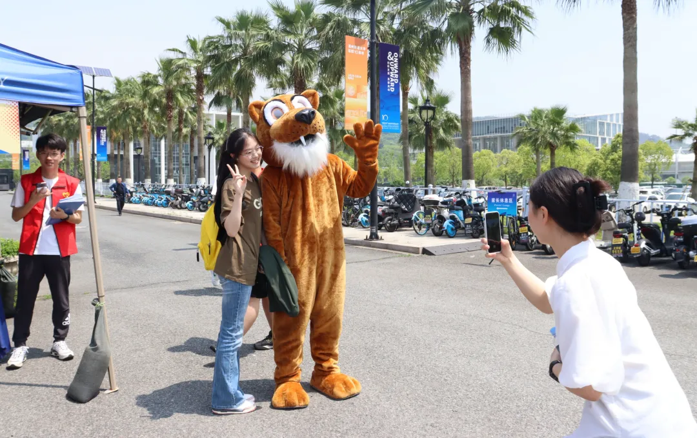
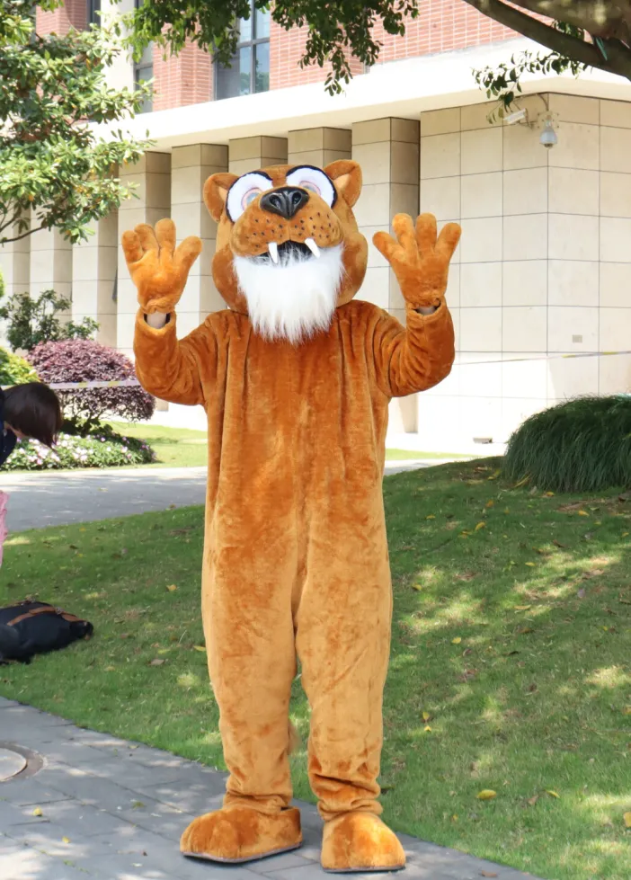
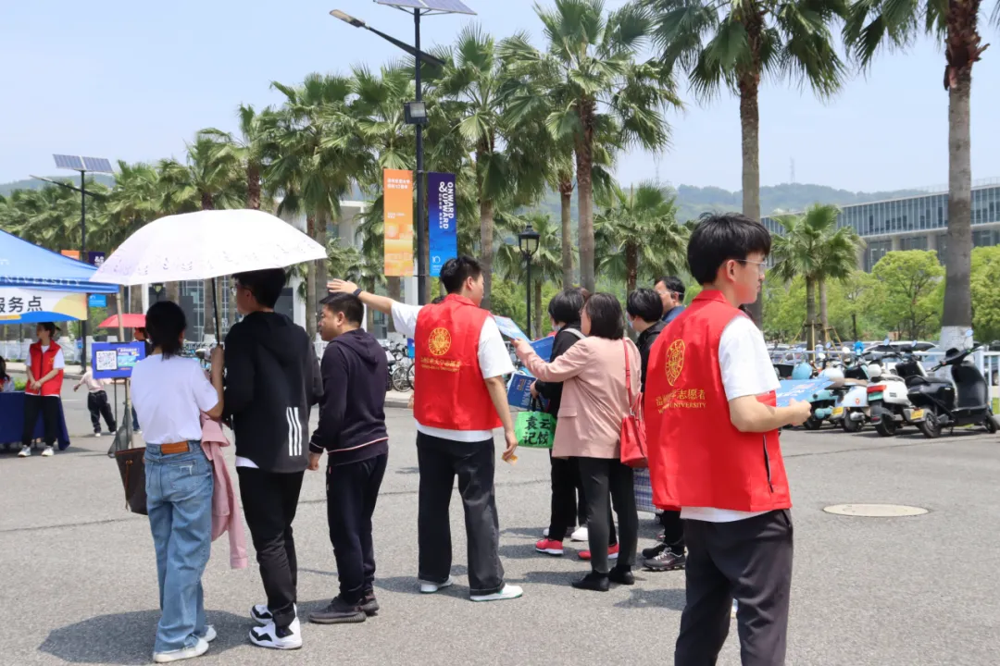
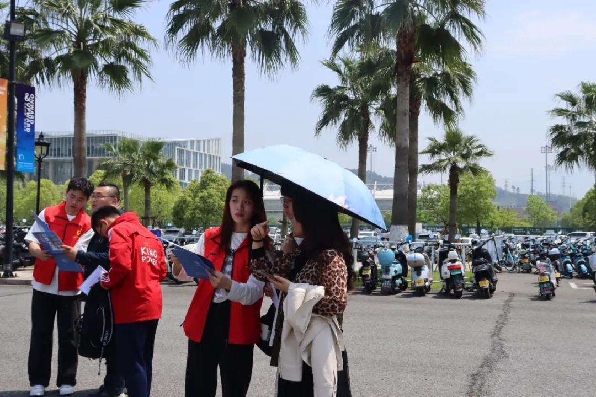
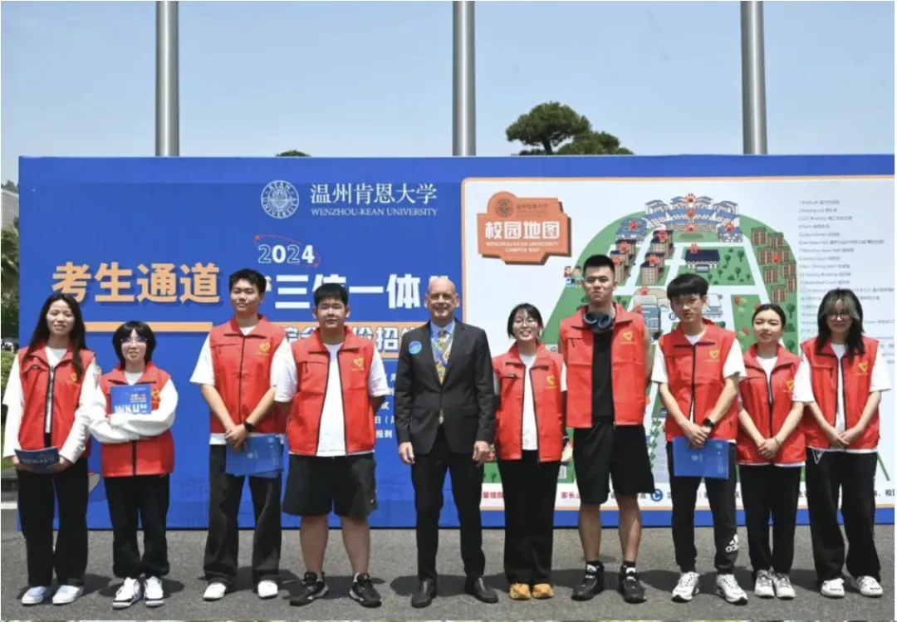

Three-in-One Comprehensive Test Volunteer

1. Event Overview
- The volunteer event aimed to serve over 800 parents, offering information about the school and its programs. Volunteers arrived at their designated locations on April 20, 9:00 AM, and assisted with various duties such as guiding parents, providing consultation, and offering support at school introduction lectures.

2. Volunteer Roles
- Guiding parents and candidates to the campus entrance.
- Greeting candidates with high-fives in Cougar outfits to boost morale.
- Assisting with consultation booths and answering parents' questions.
- Guiding attendees to school introduction lectures and consultation points.

3. Volunteer Reflections
3.1 Zhong ZiRui's Reflection
- It was my first time volunteering. Although it was tiring, helping many candidates and parents gave me a sense of accomplishment. I mainly assisted at the consultation points and gained a deeper understanding of the test process.
3.2 Xu Kexin's Reflection
- Parents were most concerned about the employment rate, career paths, and life planning for graduates. Despite the heat and heavy workload, I was glad to help answer their questions.
3.3 Jiang Yihan's Reflection
- Many parents asked volunteers' perspectives about whether introverted children would adapt to our collaborative teaching style. I believe our system helps introverted students step out of their comfort zones.
3.4 Wang Dechen's Reflection
- Despite the hot weather, we welcomed each candidate and parent enthusiastically. It was a meaningful experience, and I hope volunteer activities continue to grow.
3.5 Zhang Zhenhao's Reflection
- This was my first time as a Cougar. Despite the heat, I enjoyed encouraging candidates with high-fives. Some students even grabbed my tail, which reminded me of my high school days.

4. Farewell and Best Wishes
- As the "Trinity" Comprehensive Test ended, volunteers reflected on their experiences. They wished all candidates success in their future endeavors and expressed hope to meet again in September, continuing to witness each other's growth and achievements.
